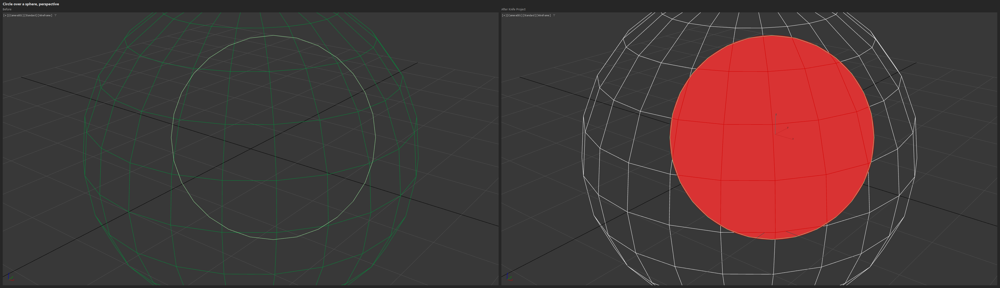
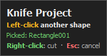

Tools / Knife Project
Knife Project
Cut the outline of a shape into a mesh, exactly as you see it from the current view.
What it does
The selected shapes (splines) are projected onto an Editable Poly or Edit Poly from the view you are looking through. Their outline is cut into the mesh and the polygons inside are selected.

Pick two shapes, right-click, and watch the cut and the selected inside polygons appear.
How to use it
- Select the mesh and the shapes, and look at the mesh from the view you want to cut from.
- In the right-click menu, choose Knife Project (it sits after Max's Cut).
- If no shape was selected, the tool asks you to pick them: left-click each shape, then right-click to cut.

The box at the top of the viewport tells you what to do: left-click picks another shape, right-click cuts, Esc cancels. Picked shapes turn bright green and their names are listed. Right-click with nothing picked, or Esc, cuts nothing.
Through cuts
Normally only the polygons you can see are cut. To also cut polygons that face away or hide behind others, Shift+click the menu item, or choose Knife Project Through.
Good to know
- Works on Editable Poly and Edit Poly.
- Open splines work too.
- The result depends on the view: change the view and the cut lands elsewhere.